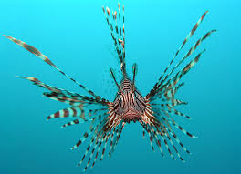

Ikan Lionfish

Lionfish adalah ikan laut yang dikenal dengan keindahan warna dan pola pada tubuhnya. Ikan ini memiliki duri-duri tajam yang dapat menyengat dan beracun, sehingga menjadi predator yang menakutkan di habitatnya. Lionfish biasanya ditemukan di perairan tropis dan subtropis, dan sering kali menjadi ancaman bagi ekosistem laut karena kemampuannya untuk berkembang biak dengan cepat. Meskipun memiliki racun, lionfish juga menjadi daya tarik bagi para penyelam dan fotografer bawah laut karena penampilannya yang menawan.